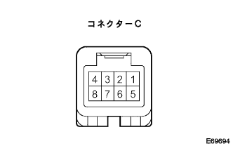
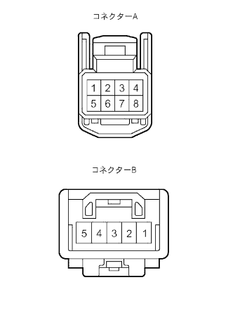
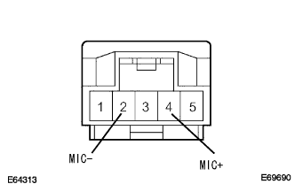

参照)参照)参照)
参照)参照)参照)”ワイドマルチAVステーシヨン”システム 音声認識できない、ハンズフリー送話音声が出ない、ノイズが入る |
参照)参照)参照)| 手順1 | ダイアグノーシス起動 |
ダイアグノーシス起動(要領は参照)
| 手順2 | マイク検査 |
 |
マイク検査(音声認識)
“検査メニュー”を選択する。
“マイク検査”を選択する。
“ここ”を選択し、マイクに向かって表示されている単語を話しかける。
音声が認識され、発声した単語のインジケータが緑色表示されることを確認する。(認識していない単語のインジケータは表示されない)
|
| ||||
| NG | |
| 手順3 | マイク検査 |
|
マイク検査(前回発声音声再生)
“再生”を選択し、前回発声した音声を再生させる。
|
| ||||
| NG | |
| 手順4 | ナビゲーション コンピュータ点検 |
|  |
点検前準備
ナビゲーションコンピュータからコネクターCを切り離す。
電圧点検
SST(トヨタエレクトリカルテスター)を使用して、ナビゲーションコンピュータ側のコネクターMACC(C4)端子とボデーアース間の電圧を点検する。
| テスター接続 プラス←マイナス | 測定条件 | 基準値 |
|---|---|---|
| MACC(C4)←→ボデーアース | IGスイッチACC | 5V |
導通点検
SST(トヨタエレクトリカルテスター)を使用して、ナビゲーションコンピュータ側のコネクターSW-(C1)端子とボデーアース間の導通を点検する。
| テスター接続 プラス←マイナス | 測定条件 | 基準 |
|---|---|---|
| SW-(C1)←→ボデーアース | 常時 | 導通あり |
|
| ||||
| OK | |
| 手順5 | ボイスコマンドスイッチ点検（ナビゲーションコンピュータ←→テレホンマイクロホンASSY間） |
|  |
点検前準備
ナビゲーションコンピュータおよびテレホンマイクロホンASSYのコネクターを切り離す。
導通点検
SST(トヨタエレクトリカルテスター)を使用して、ナビゲーションコンピュータ←→テレホンマイクロホンASSY間ボイスコマンドスイッチの導通を点検する。
| テスター接続 (ナビゲーションコンピュータ側←→テレホンマイクロホンASSY側) | 基準 |
|---|---|
| MIC+(A3)←→MIC+(B4) | 導通あり |
| MIC-(A5)←→MIC-(B2) | 導通あり |
| MACC(A4)←→MACC(B5) | 導通あり |
| SGND(A6)←→SGND(B1) | 導通あり |
短絡点検
SST(トヨタエレクトリカルテスター)を使用して、ボイスコマンドスイッチのコネクター各端子間の導通を点検する。
| テスター接続 | 基準 |
|---|---|
| SW-(A1)←→MIC-(A5)←→SGND(A6)←→SNSE(A7)←→SGND(B1) | 導通あり |
|
| ||||
| OK | |
| 手順6 | テレホンマイクロホンASSY点検 |
|  |
波形点検
IGスイッチACCにする。
オシロスコープを使用して、テレホンマイクロホンASSYのコネクターを接続した状態で、MIC-(B2)とMIC+(B4)間の波形を点検する。
|
| ||||
| OK | ||
| ||